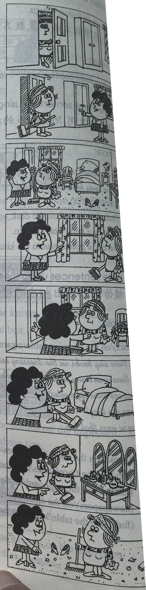

Lesson content · 课文
Lesson 29: Come in, Amy. · 进来，艾米。
Listen then answer this question. 听录音，然后回答问题。
How must Amy clean the floor?
艾米需要如何来清扫地面？
MRS. JONES: Come in, Amy.
MRS. JONES: Shut the door, please.
MRS. JONES: This bedroom’s very untidy.
AMY: What must I do, Mrs. Jones?
MRS. JONES: Open the window and air the room.
MRS. JONES: Then put these clothes in the wardrobe.
MRS. JONES: Then make the bed.
MRS. JONES: Dust the dressing table.
MRS. JONES: Then sweep the floor.

New words and expressions · 生词和短语
| Word · 单词 | Pronunciation · 音标 | Meaning · 词义 |
|---|---|---|
| shut | /ʃʌt/ | v. 关闭 |
| bedroom | /ˈbedruːm/ | n. 卧室 |
| untidy | /ʌnˈtaɪdi/ | adj. 乱的，不整齐的 |
| must | /mʌst/ | modal verb 必须，应该 |
| open | /ˈəʊpən/ | v. 打开 |
| air | /eə/ | v. 使……通风，换换空气 |
| put | /pʊt/ | v. 放置 |
| clothes | /kləʊðz/ | n. 衣服 |
| wardrobe | /ˈwɔːdrəʊb/ | n. 衣柜 |
| dust | /dʌst/ | v. 掸掉灰尘 |
| sweep | /swiːp/ | v. 扫 |
Notes on the text · 课文注释
- 英文中需用祈使语气来表示直接的命令、建议、告诫、邀请等多种意图。祈使句一般省略主语 you，动词采用动词的原形。如本课对话中的 Come in，shut the door，open the window … 等均为祈使句。
- What must I do? 我应该做些什么呢？其中的 must 是情态动词，表示不可逃避的义务或不可推卸的责任。
- make the bed，铺床。
Chinese translation · 参考译文
琼斯夫人：进来，艾米。
琼斯夫人：请把门关上。
琼斯夫人：这卧室太不整洁了。
艾米：我应该做些什么呢，琼斯夫人？
琼斯夫人：打开窗子，给房间通通风。
琼斯夫人：然后把这些衣服放进衣橱里去。
琼斯夫人：再把床整理一下。
琼斯夫人：掸掉梳妆台上的灰尘。
琼斯夫人：然后扫扫地。
Practice · 课文练习
Understand the lesson · 课文理解
Comprehension · 理解题
Answer the question about the lesson text. 根据课文回答问题。
-
comprehension: Comprehension · 理解题 — How must Amy clean the floor?
Practice worksheet · 配套练习
A. Dialogue
Read this dialogue. Fill in the missing words. 填空。
-
worksheet: A. Dialogue — Amy: Hello, Mrs. Jones.
Mrs. Jones: ____, Amy. Please ____ in. And ____ the door, ____.
Amy: What ____ I do, Mrs. Jones?
Mrs. Jones: My daughter’s ____ is very ____. Open the ____ and ____ the room.
Amy: Yes.
Mrs. Jones: Then ____ her clothes ____ the ____. Then ____ the bed, ____ the dressing table and ____ the floor.
Amy: Is your daughter ill, Mrs. Jones?
B. Vocabulary
Choose: shut, dust, open, make, sweep, come in, put, air. 选择恰当的词填空。
-
worksheet: B. Vocabulary — Hullo, John, please ____. And then ____ the door.
-
worksheet: B. Vocabulary — ____ the bottles in the refrigerator.
-
worksheet: B. Vocabulary — Please ____ the windows and ____ the room.
-
worksheet: B. Vocabulary — ____ the bedroom, then ____ the kitchen floor.
-
worksheet: B. Vocabulary — Please ____ your beds, children.
C. Numbers
Write these numbers in words. 用英语数词表示以下数字。
-
worksheet: C. Numbers — 7
-
worksheet: C. Numbers — 13
-
worksheet: C. Numbers — 12
-
worksheet: C. Numbers — 5
-
worksheet: C. Numbers — 8
-
worksheet: C. Numbers — 18
-
worksheet: C. Numbers — 21
-
worksheet: C. Numbers — 35
-
worksheet: C. Numbers — 24
Grammar practice · 语法练习
I. Give correct replies using the words given
Example: The spoons and forks are dirty. (clean) -> Clean them, please.
- The spoons and forks are dirty. (clean)
Clean them, please.
- These beds are untidy. (make)
- The room is hot. (open/window)
- This knife is blunt. (sharpen)
- Your hands and face aren't clean. (wash)
- The clothes are on the bed. (put/in the wardrobe)
- The cupboard is full. (empty)
- The door is open. (shut)
- Your pencils are blunt. (sharpen)
- The floor of the living room is dirty. (sweep)
- It's dark in the room. (turn on/light)
- The stereo is on. (turn off/stereo)
- The bookshelf is dirty. (dust)
- It's cold outside. (put on/your coat)
- The cooker isn't clean. (clean)
- The windows are open. (close)
- The knife isn't sharp. (sharpen)
- It's hot in the room. (take off/your coat)
- The box is full. (empty)
- This is a good book. (read)
II. Translate imperative sentences into English
- 请进来。
- 请坐下。
- 给我一把伞。
- 把窗户打开，让房间通通风。
- 打开你的书，读第一课。
- 请把你的票给我。
- 把桌子上的灰掸掉，再把地扫一下。
- 把你的裙子放到衣柜里去。
- 把你的自行车擦干净。
- 把报纸放到桌子上。
- 打开电视。
- 关灯。
- 打开你的箱子。
- 请把教室打扫干净。
- 把书放到书架上。
- 把盘子里的东西倒掉。
Your notes and answers
Use this space for longer responses or exercises that do not have an individual answer box.